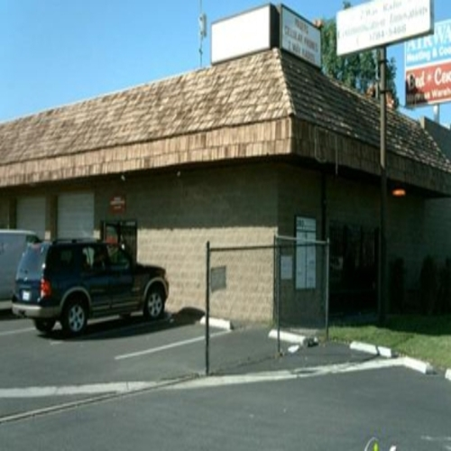
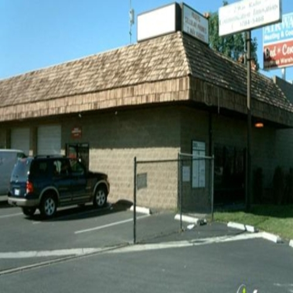

Mia Williams
Born Nov. 29, 2000. Liberal Studies major. Full time security personnel.
About me
I am a third year Liberal Studies major at the University of California, Riverside. I am originally from Sacramento, CA, but moved to Riverside for college in 2018. I have worked several food handling jobs, but have been working as a security officer for the past year. As she grew older, they became a bit more relaxed as well, but she always kept a strong traditional foundation. She admits that as she raised her two daughters, she hoped to pass down the traditional ideals she was raised on. To this day, she has internalized the ideals she was raised on and continued to hold traditional values for gender expectations. However, she also made sure to input that she does not hold harsh judgements for people who sway from the “norm”. My own upbringing was different from Jolanda’s in many ways, but because she chose to internalize the gender ideals she was raised on, there are also a lot of similarities. Growing up, I too went to church frequently. There my mother, along with other mentors in the church, made sure to make my gender expectations clear. I was expected to wear long dresses, sit with my legs crossed at the ankles, and keep quiet. I noticed the difference in treatment from my male family members and my female family members and I. As I grew older, I resisted my gender expectations slightly. I remember always having feminist ideals and feeling like women should have the right to be whoever they want. However, my parents were way more strict than my friends and people I knew. Because of this, whenever I was around my parents I always made sure to adhere to the standards that they expected of me. There was an internal struggle in my mind between growing up in a more socially progressive era and having to be raised in a strict, black househ
old. If I were to stray from my family's norms, I would surely be punished. This is an extremely important similarity between my mother and I because we both lived in fear of being punished for not following the rules. The differences between my mothers gender socialization and mine is that while my mother internalid most of the ideals she was raised under, I rejected them and chose a more progressive way of thinking as I grew older. I champion the idea of gender fluidity and hate harsh gender expectations and stereotypes. Additionally because my mother was actually raised by a pastor, her upbringing was more strict than mine. Sociologically speaking, being African American, we had several similar expectations not only as women, but as black women. There are certain norms that are also held within race. On the other hand, we also have generational differences. Gender expectations were not as free as they are in the era I grew up in. These several factors contribute to each of our personal gender socializations.
Experience
Security
• Moniter and patroll specified buildings X
• Ensure COVID-19 regulations are followed
• Record any suspicious activity with incident report
Warehouse/Picker
• Picked products to be distributed
• Organized products
• Packaged products
• Ensure product quality
Education
UC Riverside
University of California Riverside
University of California Riverside
Portfolio


